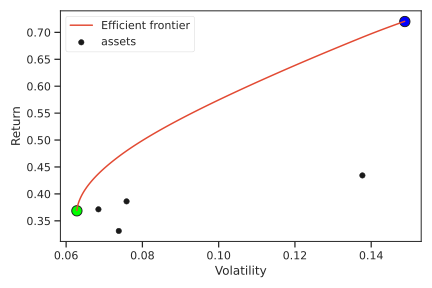
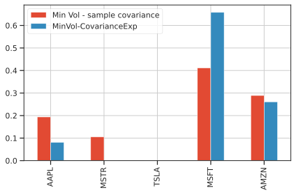
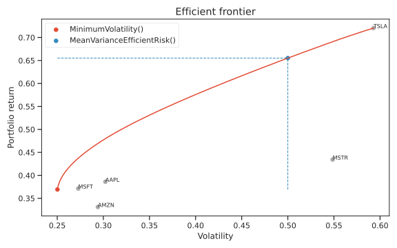

Classical Markowitz Mean-Variance optimization¶
In the classical mean-variance optimization one seeks a combination of asset weights that optimize either the volatility measured by standard deviation of asset returns, given a target return, or maximizes the return given an upper bound on the volatility. Maximum Sharpe ratio portfolio for example, is given by the selection of weights maximizing the ratio of expected returns and volatility given a risk-free rate, typically implied by bonds, which are carrying no risk.
The efficient frontier is the set of optimal portfolios that provides the highest expected return for a given level of risk, or the lowest risk for a given level of expected return. Portfolios that do not correspond with the efficient frontier are sub-optimal by definition. The efficient frontier is commonly depicted as a hyperbola, with the portfolio return on the vertical axis and risk or volatility on the horizontal axis, like in the following figure:

Note
In the picture above, the maximum return portfolio always corresponds to the portfolio weighted 100% on the riskiest asset, that is also coincident with maximum volatility (🔵️ blue dot in the upper right part of the efficient frontier plot). The minimum risk portfolio instead corresponds to the 🟢 green dot at the left spectrum of the lowest risk and lowest return. All other black dots ⚫️ are portfolios consisting of a single asset.
Minimum volatility 📖¶
Calculates the portfolio with the least volatility over the efficient frontier, namely the green dot 🟢 in the Markowitz mean-variance efficient frontier. This portfolio algorithm requires no estimates on expected returns, hence its estimation is typically considered more robust than other points along the frontier. The optimal weights are determined by the following portfolio optimization problem, where portfolio volatility is minimized:
Additional constraints can be added manually by specifiying with the add_constraint method
Example usage¶
The basic usage of the class is very easy, in one line you fit the MinimumVolatility portfolio and get the weights
from skportfolio.frontier import MinimumVolatility
from skportfolio.datasets import load_tech_stock_prices
prices = load_tech_stock_prices()
returns = prices.pct_change().dropna()
# fit portfolio directly on prices
MinimumVolatility().fit(prices).weights_
# or fit portfolio on returns, but apply weights on prices
MinimumVolatility(returns_data=True).fit(returns).predict(prices)
Altenatively, one can modify the risk estimator. Rather than the SampleCovariance, other covariance estimators can be chosen, such as the weighted exponential moving average of covariance CovarianceExp (see the returns and risk estimators section:
from skportfolio import CovarianceExp
from skportfolio.frontier import MinimumVolatility
from skportfolio.datasets import load_tech_stock_prices
import matplotlib.pyplot as plt
import pandas as pd
prices = load_tech_stock_prices()
# compare the two allocations between sample covariance and exponentially moving weighted average covariance with a span of 180 days
w_sample_cov = MinimumVolatility(frequency=252).fit(prices).weights_.rename('Min Vol - sample covariance')
w_cov_exp = MinimumVolatility(risk_estimator=CovarianceExp(frequency=252, span=180), frequency=252).fit(load_tech_stock_prices()).weights_.rename('MinVol-CovarianceExp')
pd.concat([w_sample_cov, w_cov_exp], axis=1).plot.bar()
plt.grid(True)

Note
In this example, the optimization problem is the same, but one can observe some differences in terms of allocation. This is mainly due to the different covariance estimator. The best covariance estimator must always be chosen by backtesting on data and looking at the best cross-validation score. For more information, look at the backtesting section.
Efficient return on mean variance frontier 📖¶
Calculates the portfolio over the efficient frontier given target portfolio return \(\rho_P^\star\). It explicitly solves the following optimization problem, where portfolio volatility is minimized given a lower bound on portfolio returns \(\mathbf{w}^T \boldsymbol \mu\):
Example usage¶
from skportfolio.frontier import MeanVarianceEfficientReturn
from skportfolio.datasets import load_tech_stock_prices
prices = load_tech_stock_prices()
returns = prices.pct_change().dropna()
# fit portfolio directly on prices, with target_return set in initialization
MeanVarianceEfficientReturn(target_return=0.05).fit(prices).weights_
# or fit portfolio on returns, changing target return and applying weights on prices
MeanVarianceEfficientReturn(returns_data=True).set_target_return(target_return=0.05).fit(returns).predict(prices)
Efficient risk on mean variance frontier 📖¶
Calculates the portfolio over the efficient frontier given target portfolio volatility \(\sigma_P^\star\). It explicitly solves the following optimization problem, where portfolio return is maximized given an upper limit to portfolio volatility \(\sigma^\star_P\).
Example usage¶
from skportfolio.frontier import MeanVarianceEfficientRisk
from skportfolio.datasets import load_tech_stock_prices
prices = load_tech_stock_prices()
returns = prices.pct_change().dropna()
# fit portfolio directly on prices, with target_return set in initialization
MeanVarianceEfficientRisk(target_return=0.05).fit(prices).weights_
# or fit portfolio on returns, changing target return and applying weights on prices
MeanVarianceEfficientRisk(returns_data=True).set_target_risk(target_return=0.05).fit(returns).predict(prices)
Plotting the efficient frontier¶
You can simply create the specific portfolio object and call '.plot_frontier' specifying the number of points along the frontier to be computed.
All the classes inheriting from _BaseEfficientFrontierPortfolioEstimator have the possibility to explore the efficient frontier, given prices or returns data.
Currently, these are the portfolio estimators supporting the .estimate_frontier and .plot_frontier
Example¶
Plotting the efficient frontier is very easy. The plot_frontier method accepts a large number of aesthetic arguments to make the visualization more readable and content-rich.
Look at the method documentation for further information.
from skportfolio import MinimumVolatility, MeanVarianceEfficientRisk
from skportfolio.datasets import load_tech_stock_prices
prices = load_tech_stock_prices()
ax = MinimumVolatility().fit(prices).plot_frontier(prices, num_portfolios=20)
ax = (
MeanVarianceEfficientRisk()
.set_target_risk(0.5)
.fit(prices)
.plot_frontier(
prices,
num_portfolios=20,
show_assets=True,
show_only_portfolio=True,
ax=ax
)
)
The result is the following:

References¶
-
Markowitz H., "Portfolio selection", J. Fin, Vol. 7, No. 1. (1952), pp. 77-91 url ↩
-
Markowitz itself noted that the average portfolio return and standard deviation were not good measures. Cited from its 1952 paper: "One suggestion as to tentative \(\mu_i\), \(\sigma_{ij}\) to use the observed \(\mu_i\), \(\sigma_{ii}\) for some period of the past. I believe that better methods, which take into account more information, can be found." ↩